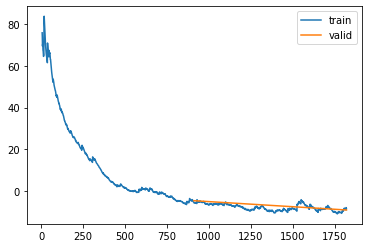
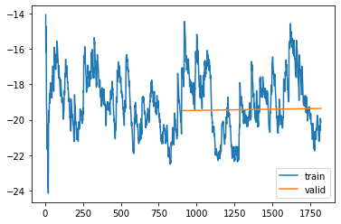
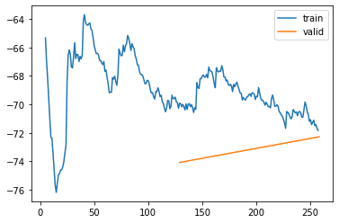

%load_ext autoreload
%autoreload 2Training Kalman Filter for Results - 6 Feb
from meteo_imp.kalman.fastai import *
from meteo_imp.kalman.filter import *
from meteo_imp.utils import *
from meteo_imp.data import *
from meteo_imp.gaussian import *
from fastai.tabular.learner import *
from fastai.learner import *
from fastai.callback.all import *
from fastcore.foundation import L
from fastcore.foundation import patch
from pathlib import Path, PosixPath
from meteo_imp.kalman.fastai import show_results
import pandas as pd
import numpy as np
import torch
import random
from pyprojroot import here
from sklearn.decomposition import PCAreset_seed()haiB = pd.read_parquet(hai_big_path)
hai_eraB = pd.read_parquet(hai_era_big_path)list(haiB.columns)['TA', 'SW_IN', 'VPD', 'PA', 'P', 'WS', 'LW_IN']base = here("analysis/results/trained_8feb")/home/simone/anaconda3/envs/data-science/lib/python3.10/site-packages/pyprojroot/pyprojroot.py:51: UserWarning: Path doesn't exist: /home/simone/Documents/uni/Thesis/GPFA_imputation/analysis/results/trained_8feb
warnings.warn("Path doesn't exist: {}".format(path))base.mkdir(exist_ok=True)@patch
def add_end(self: PosixPath, end): return self.parent / (self.name + end)def train_or_load(model, dls, lr, n, path, keep=True):
save_models = SaveModelsBatch(times_epoch=5)
learn = Learner(dls, model, KalmanLoss(only_gap=True), cbs = [Float64Callback, save_models], metrics=rmse_gap)
items = random.choices(dls.valid.items, k=4)
if path.add_end(".pickle").exists() and keep:
learn.model = torch.load(path.add_end(".pickle"))
save_models = torch.load(path.add_end("_save_models.pickle"))
# learn = torch.load(path.add_end("_learn.pickle"))
else:
learn.fit(lr, n)
torch.save(learn.model, path.add_end(".pickle"))
torch.save(save_models, path.add_end("_save_models.pickle"))
# torch.save(learn, path.add_end("_learn.pickle"))
learn.recorder.plot_loss()
return learn, save_models, items All variables - 12 varying
Model Av (All varying) all variables with a varing numbers of variables
dls_Av = imp_dataloader(haiB, hai_eraB, var_sel = gen_var_sel(list(haiB.columns)), block_len=100, gap_len=12, bs=20, control_lags=[1], n_rep=10).cpu()model_Av = KalmanFilterSR.init_local_slope_pca(len(haiB.columns),len(haiB.columns), df_pca = haiB, pred_only_gap=True, use_conditional=False)learn_Av, save_models_Av, items_Av = train_or_load(model_Av, dls_Av, 2, 1e-3, base / "All_gap_varying_12_v1.pickle")| epoch | train_loss | valid_loss | rmse_gap | time |
|---|---|---|---|---|
| 0 | -5.528869 | -4.755432 | 0.315470 | 25:56 |
| 1 | -8.360162 | -9.218511 | 0.282865 | 25:32 |

show_results(learn_Av, items=items_Av, control_map=control_map)/home/simone/anaconda3/envs/data-science/lib/python3.10/site-packages/fastai/callback/core.py:69: UserWarning: You are shadowing an attribute (__class__) that exists in the learner. Use `self.learn.__class__` to avoid this
warn(f"You are shadowing an attribute ({name}) that exists in the learner. Use `self.learn.{name}` to avoid this")[MeteoImpItem(i=2258, shift=-10, var_sel=['TA', 'PA', 'VPD', 'LW_IN'], gap_len=12), MeteoImpItem(i=1912, shift=-50, var_sel=['VPD', 'SW_IN', 'TA', 'PA', 'LW_IN', 'P'], gap_len=12), MeteoImpItem(i=1852, shift=-20, var_sel=['TA', 'SW_IN', 'P', 'WS', 'PA', 'VPD'], gap_len=12), MeteoImpItem(i=2197, shift=40, var_sel=['LW_IN', 'P', 'WS', 'PA', 'TA', 'SW_IN', 'VPD'], gap_len=12)]SchemaValidationError: Invalid specification
altair.vegalite.v5.api.Chart, validating 'required'
'data' is a required property
alt.HConcatChart(...)All variables - 96 varying
Model Av (All varying) all variables with a varing numbers of variables
reset_seed(100)/home/simone/anaconda3/envs/data-science/lib/python3.10/site-packages/fastai/callback/core.py:69: UserWarning: You are shadowing an attribute (__class__) that exists in the learner. Use `self.learn.__class__` to avoid this
warn(f"You are shadowing an attribute ({name}) that exists in the learner. Use `self.learn.{name}` to avoid this")dls_Av96 = imp_dataloader(haiB, hai_eraB, var_sel = gen_var_sel(list(haiB.columns)), block_len=150, gap_len=30, bs=20, control_lags=[1], n_rep=10).cpu()model_Av96 = model_Av.copy()learn_Av96, sAv96e_models_Av96, items_Av96 = train_or_load(model_Av96, dls_Av96, 1, 1e-3, base / "All_gap_varying_30_v1.pickle")| epoch | train_loss | valid_loss | rmse_gap | time |
|---|---|---|---|---|
| 0 | 7.840665 | 3.947803 | 0.345720 | 39:47 |
PicklingError: Can't pickle <class 'meteo_imp.kalman.fastai.SaveModelsBatch'>: it's not the same object as meteo_imp.kalman.fastai.SaveModelsBatchshow_results(learn_Av96, items=items_Av96, control_map=control_map)All variables - 12 all
dls_Aa = imp_dataloader(haiB, hai_eraB, var_sel = list(haiB.columns), block_len=100, gap_len=12, bs=20, control_lags=[1], n_rep=10).cpu()model_Aa = model_Av.copy()learn_Aa, save_models_Aa, items_Aa = train_or_load(model_Aa, dls_Aa, 2, 2e-4, base / "All_gap_all_v1.pickle")| epoch | train_loss | valid_loss | rmse_gap | time |
|---|---|---|---|---|
| 0 | -17.658522 | -19.488553 | 0.299405 | 18:14 |
| 1 | -20.148824 | -19.363829 | 0.298983 | 19:30 |

show_results(learn_Aa, items=items_Aa, control_map=control_map)[MeteoImpItem(i=1844, shift=-10, var_sel=['TA', 'SW_IN', 'VPD', 'PA', 'P', 'WS', 'LW_IN'], gap_len=12), MeteoImpItem(i=2247, shift=-10, var_sel=['TA', 'SW_IN', 'VPD', 'PA', 'P', 'WS', 'LW_IN'], gap_len=12), MeteoImpItem(i=2253, shift=30, var_sel=['TA', 'SW_IN', 'VPD', 'PA', 'P', 'WS', 'LW_IN'], gap_len=12), MeteoImpItem(i=1975, shift=-20, var_sel=['TA', 'SW_IN', 'VPD', 'PA', 'P', 'WS', 'LW_IN'], gap_len=12)]All variables - 96 all
Model Aa (All varying) all variables with a varing numbers of variables
dls_Aa96 = imp_dataloader(haiB, hai_eraB, var_sel = list(haiB.columns), block_len=200, gap_len=36, bs=20, control_lags=[1], n_rep=10).cpu()model_Aa96 = model_Aa.copy()learn_Aa96, save_models_Aa96, items_Aa96 = train_or_load(model_Aa96, dls_Aa96, 2, 2e-4, base / "All_gap_all_96_v1.pickle")
0.00% [0/2 00:00<?]
| epoch | train_loss | valid_loss | rmse_gap | time |
|---|
0.00% [0/454 00:00<?]
ValueError: Expected parameter covariance_matrix (Tensor of shape (7, 7)) of distribution MultivariateNormal(loc: torch.Size([7]), covariance_matrix: torch.Size([7, 7])) to satisfy the constraint PositiveDefinite(), but found invalid values:
tensor([[ 0.0464, 0.0853, 0.0814, -0.0031, -0.0969, -0.0054, -0.0313],
[ 0.0853, 0.2309, 0.1449, -0.0055, -0.1849, -0.0164, -0.0815],
[ 0.0814, 0.1449, 0.1417, -0.0038, -0.1716, -0.0370, -0.0575],
[-0.0031, -0.0055, -0.0038, 0.0013, 0.0101, 0.0027, 0.0033],
[-0.0969, -0.1849, -0.1716, 0.0101, 1.0555, 0.0276, 0.0835],
[-0.0054, -0.0164, -0.0370, 0.0027, 0.0276, 0.0684, -0.0029],
[-0.0313, -0.0815, -0.0575, 0.0033, 0.0835, -0.0029, 0.1097]],
dtype=torch.float64, grad_fn=<ExpandBackward0>)show_results(learn_Aa96, items=items_Aa96, control_map=control_map)TA - 12
dls_TA = imp_dataloader(haiB, hai_eraB, var_sel = 'TA', block_len=100, gap_len=12, bs=20, control_lags=[1], n_rep=5).cpu()model_TA = model_Av.copy()learn_TA, save_models_TA, items_TA = train_or_load(model_TA, dls_TA, 2, 2e-4, base / "TA_12_v1.pickle")show_results(learn_TA, items=items_TA, control_map=control_map, hide_no_gap=True)[MeteoImpItem(i=1895, shift=30, var_sel=['TA'], gap_len=12), MeteoImpItem(i=2186, shift=-30, var_sel=['TA'], gap_len=12), MeteoImpItem(i=2220, shift=-50, var_sel=['TA'], gap_len=12), MeteoImpItem(i=1844, shift=-50, var_sel=['TA'], gap_len=12)]TA - 96
Model TA
dls_TA96 = imp_dataloader(haiB, hai_eraB, var_sel = 'TA', block_len=350, gap_len=96, bs=20, control_lags=[1], n_rep=5).cpu()model_TA96 = model_TA.copy()learn_TA96, save_models_TA96, items_TA96 = train_or_load(model_TA96, dls_TA96, 2, 2e-4, base / "TA_96_v1.pickle")| epoch | train_loss | valid_loss | rmse_gap | time |
|---|---|---|---|---|
| 0 | -70.275536 | -74.080324 | 0.107727 | 21:53 |
| 1 | -71.829675 | -72.279019 | 0.109978 | 22:05 |

show_results(learn_TA96, items=items_TA96, control_map=control_map, hide_no_gap=True)[MeteoImpItem(i=603, shift=-35, var_sel=['TA'], gap_len=96), MeteoImpItem(i=536, shift=-175, var_sel=['TA'], gap_len=96), MeteoImpItem(i=528, shift=105, var_sel=['TA'], gap_len=96), MeteoImpItem(i=642, shift=105, var_sel=['TA'], gap_len=96)]SW_IN - 12
dls_SW_IN = imp_dataloader(haiB, hai_eraB, var_sel = 'SW_IN', block_len=100, gap_len=12, bs=20, control_lags=[1], n_rep=5).cpu()model_SW_IN = model_Av.copy()learn_SW_IN, save_models_SW_IN, items_SW_IN = train_or_load(model_SW_IN, dls_SW_IN, 2, 2e-4, base / "SW_IN_12_v1.pickle")show_results(learn_SW_IN, items=items_SW_IN, control_map=control_map, hide_no_gap=True)SW_IN - 96
Model SW_IN (All varying) all variables with a varing numbers of variables
dls_SW_IN96 = imp_dataloader(haiB, hai_eraB, var_sel = 'SW_IN', block_len=350, gap_len=96, bs=20, control_lags=[1], n_rep=5).cpu()model_SW_IN96 = model_SW_IN.copy()learn_SW_IN96, save_models_SW_IN96, items_SW_IN96 = train_or_load(model_SW_IN96, dls_SW_IN96, 2, 2e-4, base / "SW_IN_96_v1.pickle")show_results(learn_SW_IN96, items=items_SW_IN96, control_map=control_map, hide_no_gap=True)LW_IN - 12
dls_LW_IN = imp_dataloader(haiB, hai_eraB, var_sel = 'LW_IN', block_len=100, gap_len=12, bs=20, control_lags=[1], n_rep=5).cpu()model_LW_IN = model_Av.copy()learn_LW_IN, save_models_LW_IN, items_LW_IN = train_or_load(model_LW_IN, dls_LW_IN, 2, 2e-4, base / "LW_IN_12_v1.pickle")show_results(learn_LW_IN, items=items_LW_IN, control_map=control_map, hide_no_gap=True)LW_IN - 96
Model LW_IN (All varying) all variables with a varing numbers of variables
dls_LW_IN96 = imp_dataloader(haiB, hai_eraB, var_sel = 'LW_IN', block_len=350, gap_len=96, bs=20, control_lags=[1], n_rep=5).cpu()model_LW_IN96 = model_LW_IN.copy()learn_LW_IN96, save_models_LW_IN96, items_LW_IN96 = train_or_load(model_LW_IN96, dls_LW_IN96, 2, 2e-4, base / "LW_IN_96_v1.pickle")show_results(learn_LW_IN96, items=items_LW_IN96, control_map=control_map, hide_no_gap=True)No Control
All variables - 12 varying
Model Av_nc (All varying) all variables with a varing numbers of variables
dls_Av_nc = imp_dataloader(haiB, hai_eraB, var_sel = gen_var_sel(list(haiB.columns)), block_len=100, gap_len=12, bs=20, control_lags=[1], n_rep=10).cpu()model_Av_nc = model_Av.copy()
model_Av_nc.use_control = Falselearn_Av_nc, save_models_Av_nc, items_Av_nc = train_or_load(model_Av_nc, dls_Av_nc, 10, 5e-4, base / "All_gap_varying_12_no_control_v1.pickle")show_results(learn_Av_nc, items=items_Av_nc, control_map=control_map)InteractiveSequence(save_models_Av_nc.show_results(learn_Av_nc))()All variables - 96 varying
Model Av_nc (All varying) all variables with a varing numbers of variables
dls_Av_nc96 = imp_dataloader(haiB, hai_eraB, var_sel = gen_var_sel(list(haiB.columns)), block_len=350, gap_len=96, bs=20, control_lags=[1], n_rep=10).cpu()model_Av_nc96 = model_Av_nc.copy()learn_Av_nc96, save_models_Av_nc96, items_Av_nc96 = train_or_load(model_Av_nc96, dls_Av_nc96, 2, 2e-4, base / "All_gap_varying_96_no_control_v1.pickle")show_results(learn_Av_nc96, items=items_Av_nc96, control_map=control_map)All variables - 12 all
dls_Aa_nc = imp_dataloader(haiB, hai_eraB, var_sel = list(haiB.columns), block_len=100, gap_len=12, bs=20, control_lags=[1], n_rep=10).cpu()model_Aa_nc = model_Av_nc.copy()learn_Aa_nc, save_models_Aa_nc, items_Aa_nc = train_or_load(model_Aa_nc, dls_Aa_nc, 2, 2e-4, base / "All_gap_all_no_control_v1.pickle")show_results(learn_Aa_nc, items=items_Aa_nc, control_map=control_map)All variables - 96 all
Model Aa_nc (All varying) all variables with a varing numbers of variables
dls_Aa_nc96 = imp_dataloader(haiB, hai_eraB, var_sel = list(haiB.columns), block_len=350, gap_len=96, bs=20, control_lags=[1], n_rep=10).cpu()model_Aa_nc96 = model_Aa_nc.copy()learn_Aa_nc96, save_models_Aa_nc96, items_Aa_nc96 = train_or_load(model_Aa_nc96, dls_Aa_nc96, 2, 2e-4, base / "All_gap_all_96_no_control_v1.pickle")show_results(learn_Aa_nc96, items=items_Aa_nc96, control_map=control_map)TA_nc - 12
dls_TA_nc = imp_dataloader(haiB, hai_eraB, var_sel = 'TA', block_len=100, gap_len=12, bs=20, control_lags=[1], n_rep=5).cpu()model_TA_nc = model_Av_nc.copy()learn_TA_nc, save_models_TA_nc, items_TA_nc = train_or_load(model_TA_nc, dls_TA_nc, 2, 2e-4, base / "TA_nc_12_no_control_v1.pickle")show_results(learn_TA_nc, items=items_TA_nc, control_map=control_map, hide_no_gap=True)TA_nc - 96
Model TA_nc (All varying) all variables with a varing numbers of variables
dls_TA_nc96 = imp_dataloader(haiB, hai_eraB, var_sel = 'TA', block_len=350, gap_len=96, bs=20, control_lags=[1], n_rep=5).cpu()model_TA_nc96 = model_TA_nc.copy()learn_TA_nc96, save_models_TA_nc96, items_TA_nc96 = train_or_load(model_TA_nc96, dls_TA_nc96, 2, 2e-4, base / "TA_nc_96_no_control_v1.pickle")show_results(learn_TA_nc96, items=items_TA_nc96, control_map=control_map, hide_no_gap=True)SW_IN_nc - 12
dls_SW_IN_nc = imp_dataloader(haiB, hai_eraB, var_sel = 'SW_IN_nc', block_len=100, gap_len=12, bs=20, control_lags=[1], n_rep=5).cpu()model_SW_IN_nc = model_Av_nc.copy()learn_SW_IN_nc, save_models_SW_IN_nc, items_SW_IN_nc = train_or_load(model_SW_IN_nc, dls_SW_IN_nc, 2, 2e-4, base / "SW_IN_nc_12_no_control_v1.pickle")show_results(learn_SW_IN_nc, items=items_SW_IN_nc, control_map=control_map, hide_no_gap=True)SW_IN_nc - 96
Model SW_IN_nc (All varying) all variables with a varing numbers of variables
dls_SW_IN_nc96 = imp_dataloader(haiB, hai_eraB, var_sel = 'SW_IN_nc', block_len=350, gap_len=96, bs=20, control_lags=[1], n_rep=5).cpu()model_SW_IN_nc96 = model_SW_IN_nc.copy()learn_SW_IN_nc96, save_models_SW_IN_nc96, items_SW_IN_nc96 = train_or_load(model_SW_IN_nc96, dls_SW_IN_nc96, 2, 2e-4, base / "SW_IN_nc_96_no_control_v1.pickle")show_results(learn_SW_IN_nc96, items=items_SW_IN_nc96, control_map=control_map, hide_no_gap=True)LW_IN_nc - 12
dls_LW_IN_nc = imp_dataloader(haiB, hai_eraB, var_sel = 'LW_IN', block_len=100, gap_len=12, bs=20, control_lags=[1], n_rep=5).cpu()model_LW_IN_nc = model_Av_nc.copy()learn_LW_IN_nc, save_models_LW_IN_nc, items_LW_IN_nc = train_or_load(model_LW_IN_nc, dls_LW_IN_nc, 2, 2e-4, base / "LW_IN_12_no_control_v1.pickle")show_results(learn_LW_IN_nc, items=items_LW_IN_nc, control_map=control_map, hide_no_gap=True)LW_IN_nc - 96
Model LW_IN_nc (All varying) all variables with a varing numbers of variables
dls_LW_IN_nc96 = imp_dataloader(haiB, hai_eraB, var_sel = 'LW_IN_nc', block_len=350, gap_len=96, bs=20, control_lags=[1], n_rep=5).cpu()model_LW_IN_nc96 = model_LW_IN_nc.copy()learn_LW_IN_nc96, save_models_LW_IN_nc96, items_LW_IN_nc96 = train_or_load(model_LW_IN_nc96, dls_LW_IN_nc96, 2, 2e-4, base / "LW_IN_96_no_control_v1.pickle")show_results(learn_LW_IN_nc96, items=items_LW_IN_nc96, control_map=control_map, hide_no_gap=True)